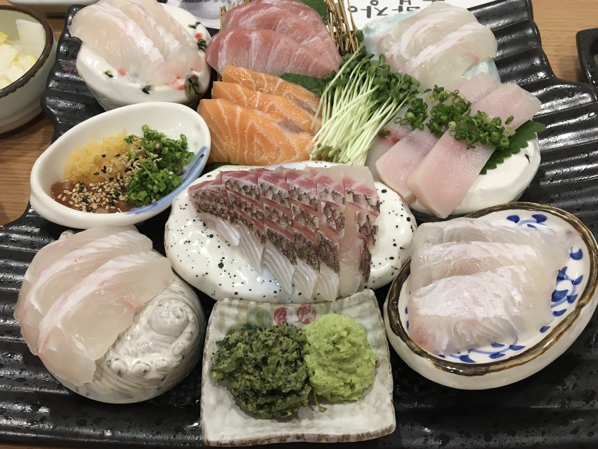
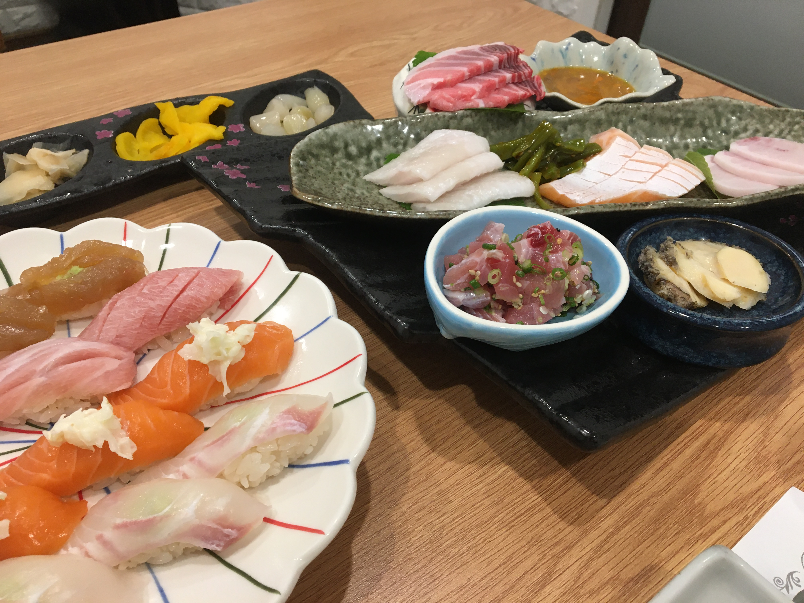

Seafood(회/해산물)
- 초밥장이
- 섬마을
- 해삼집
 
초밥과 회를 합리적인 가격에 만나볼 수 있다. 신선한 회를 숙성시켜 사용해서 부드러운 식감이 특징. 차례로 나오는 음식을 조금씩 먹다보면 어느새 배가 든든해진다. 타지에서 찾아온 손님을 대접하기에 좋은 식당이다.
깔끔하고 정갈한 횟집이다.신선한 회뿐만 아니라 해산물로 만든 다양한 밑반찬을 즐길 수 있다. 홀뿐만 아니라 독립된 방도 있어 손님을 데려가기에도 좋다.
회와 밑반찬이 푸짐하게 나온다. 신선한 횟감을 사용하기에 쫄깃한 식감을 즐길 수 있다. 식당이 좌식으로 되어있어 친근한 느낌이 있지만 조금 불편할 수 있다.